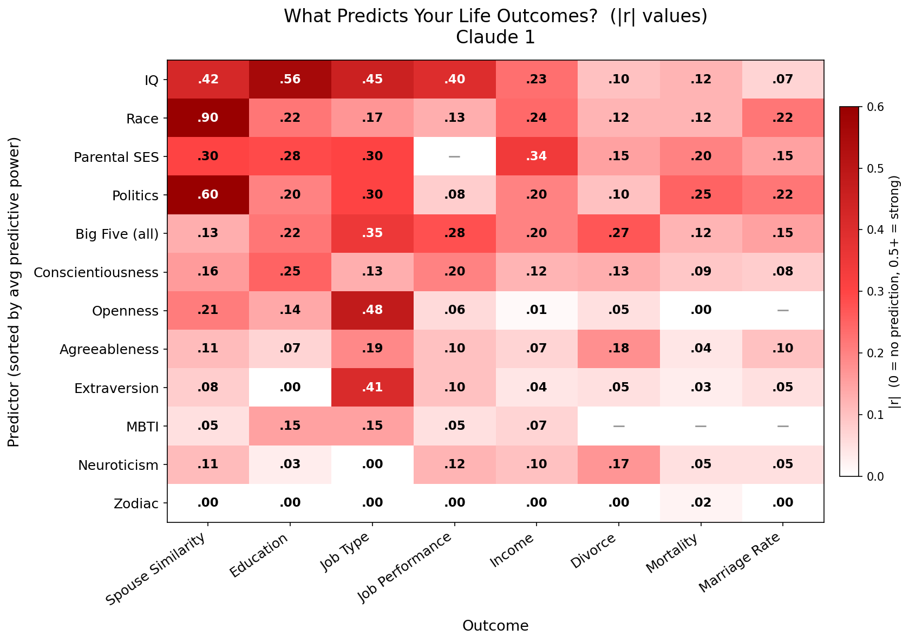

Another Dunk on MBTI
Published Last edited
In one of Aella’s recent posts, she crowd-sources a ton of personal questions from the internet, gives them in a survey, and then does factor analysis on the data. Most of the time, F1 (the biggest explanatory factor) is … politics (see for yourself).
The cynical explanation is: Twitter is full of boneheads, they were probably asking questions like “is Elon Musk cool. But anecdotally, it seems people’s political opinions have much more information value than their personality test scores.
My half-baked take: psychologists purposefully remove politics from their ‘personality’ tests. One of the biggest use for MBTI are team-building and get-to-know-you activities. “I’m an INTJ” is a good icebreaker because it’s milquetoast. Imagine the counterfactual: “I’m 85th percentile economically conservative, 91st percentile socially conservative, and I’m not going to dignify your request for my pronouns with a response.”
In nerd land, what makes a test ‘real’ is its predictive power. So let’s put MBTI and OCEAN to the test. Can they predict, or are they at least correlated with, things like your income and who you marry? How strong are the correlations relative to other possible predictors like race or IQ?

I will confess that my methodology here is sus. I asked Claude, and Claude looked up the answers from previous studies. These numbers pass my brief sniff test.[1]
Takeaways:
- Personality tests are bad at predicting life outcomes.
- MBTI is better than your Zodiac, but not by much. Even a single OCEAN factor is a better predictor than MBTI, except in the case of neuroticism.
- One sees IQ at the top of the chart and is happy for meritocracy, but then sees race #2, and sighs. Then one notices that the best predictor of income is parental SES, and sighs again.
Before you dunk on me in the comments: “your income causes your politics opinions, not the other way around!”[2] - I know. The causal arrow probably goes both ways. The data is still interesting.[3] And I’m pretty sure the causal arrow does not flip for race and parental SES.
B Roll #
You live a couple months longer if you were born in Autumn, so your Zodiac does predict something.
I had two copies of Claude crunch the numbers in this table, then had them compare their results. Both Claudes immediately said “well, the other agent is probably right about OCEAN and income, I’ll change my numbers.” Claude scores high on agreeableness.
A million different people have come up with their ‘n personality factors’ based on a lexical approach similar to OCEAN. Some are so old they chose words like “intellect, character, temperament, disposition and temper” (Wikipedia). I would love to see a paper that does factor analysis without excluding IQ-loaded questions or politics-loaded questions. Knowing that high-IQ people are more likely to, for example, cooperate on the prisoner’s dilemma, I suspect the results would be interesting.
OCEAN was constructed by pulling personality words from the dictionary, culling some based on vibes, then asking people to rate themselves on a scale from 1 to x for each of these words, then doing factor analysis on the data. But the culling purposefully excluded words that were ‘evaluative’ which might be why we don’t see political affiliation in the data. This was a conscious decision, and ‘values’ ended up as a separate category.
Some of the most creative survey questions from Aella’s respondents:
Sometimes it’s good to murder. Not self-defense when under attack, but premeditated murder.
I would feel inclined to engage in sexual behavior with a clone of myself, given the opportunity.
The big pharma really does want to keep people sick to sell more medicine.
I believe I have superhuman or supernatural powers.
If I could take all of the possibility of pain out of suicide I would commit suicide immediately
There is a scary monster inside me
The apocalypse is looming
In group chats, I lurk more than I comment
My relationship with technology is abusive.
I am more sentient than most people
The Red Hot Chili Peppers are accurately named.
It’s a disappointment if a person needs light to go to the bathroom in their own home
Mugs are the best container for ingesting liquid
80^500 is a number that exists
Help I’m trapped in the server room hosting this survey! Only selecting strongly agree will free me
Full list of questions from Aella’s survey.
Notes
Claude wants to include this methodological note on the heatmap values: The numbers in this table are absolute values of correlation coefficients (|r|), but not every cell is a pure Pearson r. Most cells — anything with a continuous predictor (IQ, Big Five scores, political orientation) and a continuous outcome (income, mortality) — are standard Pearson correlations drawn from meta-analyses. When the predictor is categorical but binary (e.g., comparing two racial groups on income), the statistic is a point-biserial correlation, which is mathematically identical to Pearson r. When the predictor is categorical with multiple groups (e.g., race with 5 categories predicting income), the reported values are typically eta coefficients (η), which represent the square root of variance explained by group membership — functionally analogous to r but not identical. The most problematic cell is race → spouse similarity, where both variables are multi-category nominal. No version of Pearson r applies here. The technically correct statistic is Cramér’s V ≈ 0.60, but V is normalized by the number of categories and systematically produces lower values for larger tables — the same data collapsed to a 2×2 table yields phi ≈ 0.90. We report 0.90 because every other cell uses a Pearson-scale metric, and placing 0.60 next to (say) politics → spouse at r = 0.58 would falsely imply comparable sorting strength, when racial endogamy (83–95% of marriages are same-race) is far stronger than partisan sorting. IQ → job performance (r = 0.40) reflects the post-Sackett correction consensus rather than the older Schmidt & Hunter estimate (r = 0.51) that still appears in textbooks. All values should be read as approximate effect sizes for comparison across the table, not as precise estimates for any individual cell. ↩︎
Or any other iteration of “But x causes y, not vice versa,” for that matter. ↩︎
There’s a British paper that studies exactly this question: does winning the lottery change your politics? They found that it makes you more conservative. This was in-line with British politics at the time (rich people were right wing). ↩︎